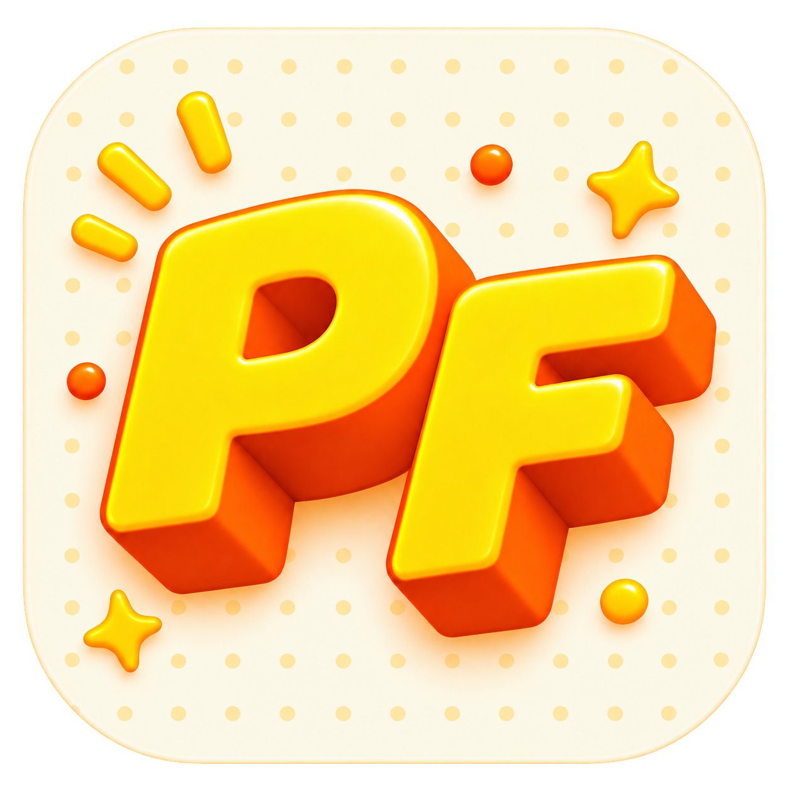

PixelFriend
Your friendly water reminder
CHOOSE YOUR CHARACTER
Closing this window keeps reminders running from the PixelFriend icon in the menu bar. Click that icon to reopen this window.

Your friendly water reminder
Closing this window keeps reminders running from the PixelFriend icon in the menu bar. Click that icon to reopen this window.